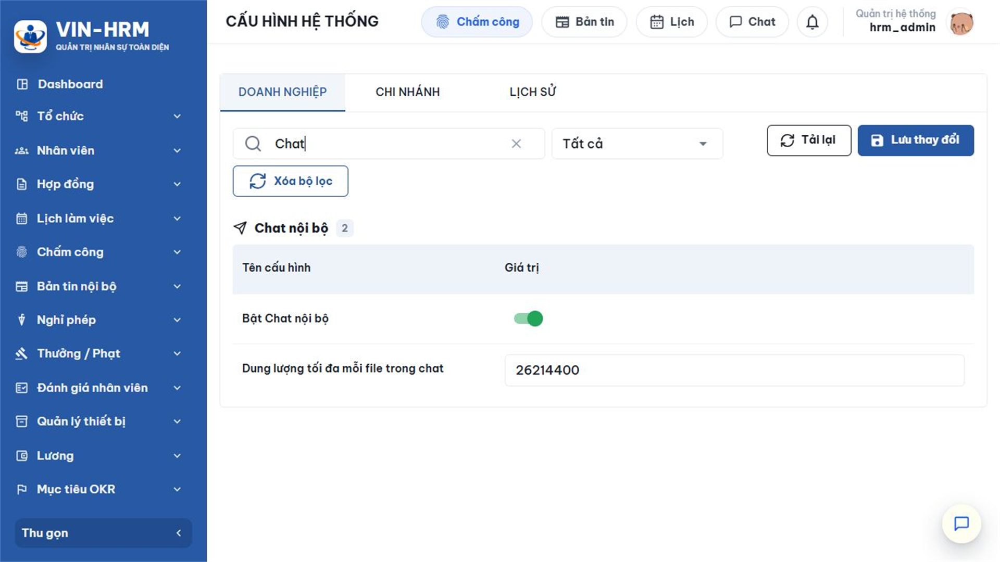
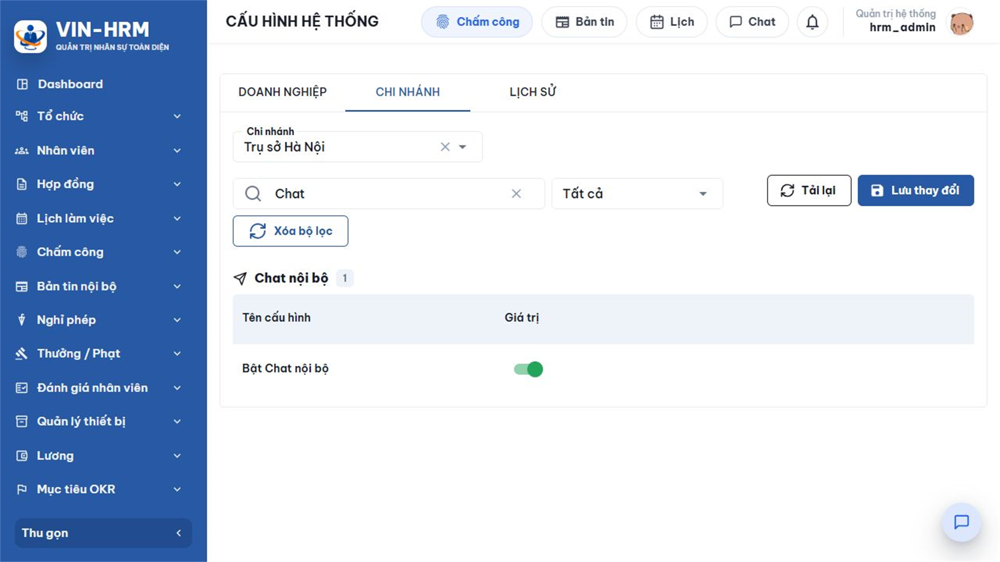
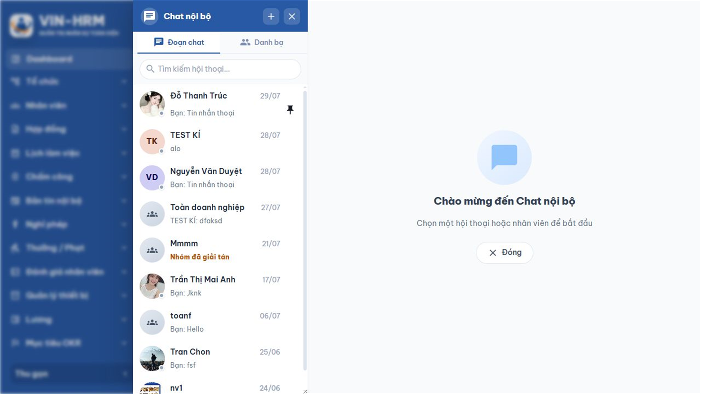
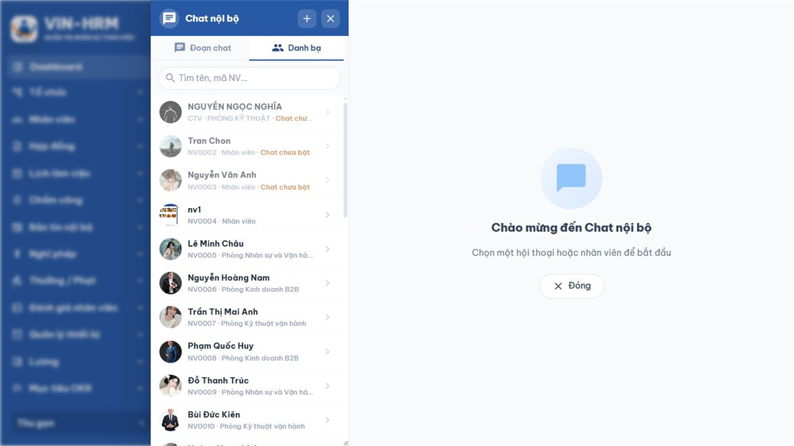
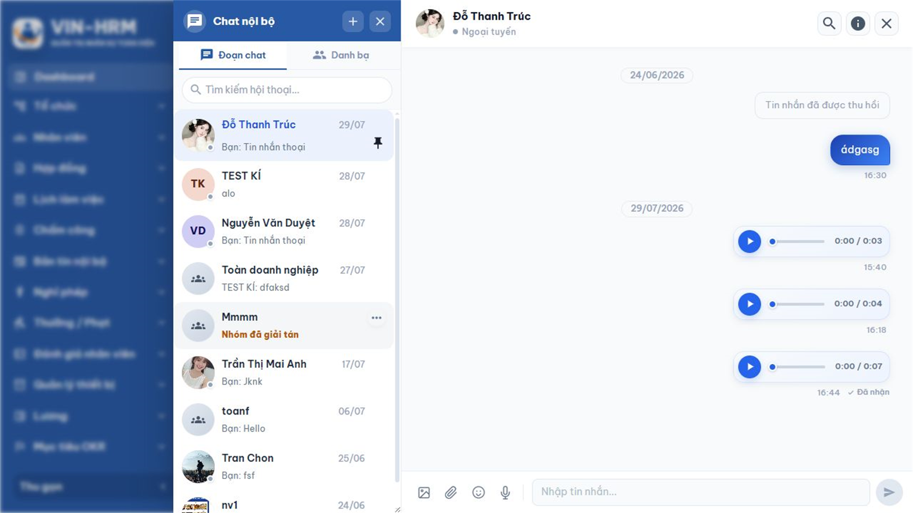
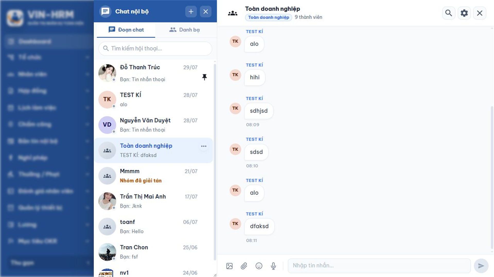
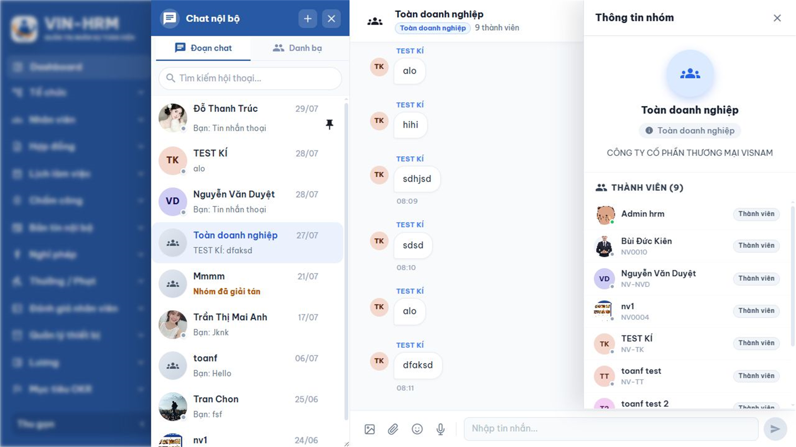
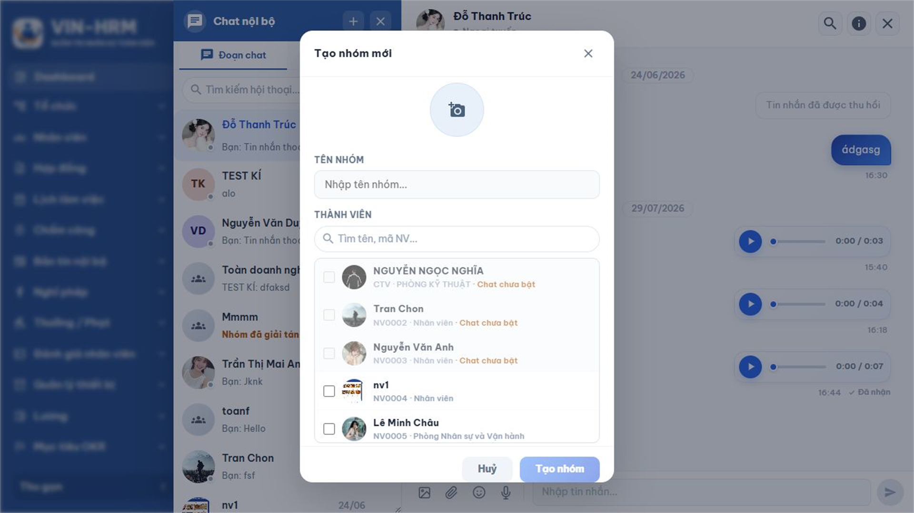
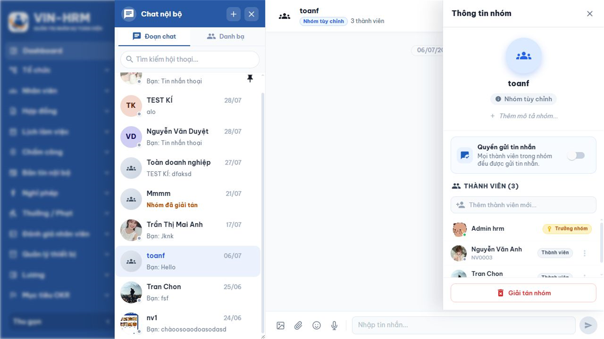
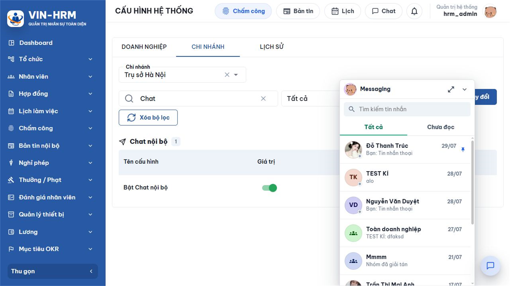

1. Mục đích, phạm vi và luồng sử dụng
Chat nội bộ giúp người dùng trao đổi ngay trong VIN-HRM mà không phải rời khỏi hệ thống. Người dùng có thể trò chuyện riêng với một đồng nghiệp, trao đổi trong nhóm do mình tạo hoặc sử dụng các nhóm được hệ thống tự động lập theo Phòng ban, Chi nhánh và Doanh nghiệp. Tin nhắn, trạng thái đã đọc và thông báo được cập nhật theo thời gian thực.
Tài liệu này hướng dẫn từ điều kiện sử dụng, cách mở giao diện, tìm người, chat cá nhân, nhận biết bốn loại nhóm, quản lý nhóm tự tạo, sử dụng các thao tác trên tin nhắn, ghim/tắt thông báo hội thoại, dùng Chat nhanh và xử lý các lỗi thường gặp. Những thao tác quản trị cấu hình và phân quyền cũng được giải thích để người đọc hiểu vì sao một tài khoản có thể chỉ xem nhưng không thể gửi tin.
1.1. Luồng sử dụng tổng quát
| 1. Mở Chat Chọn nút Chat trên thanh đầu trang hoặc mở Chat nhanh ở góc màn hình. |
| ↓ |
| 2. Chọn nguồn hội thoại Đoạn chat đã có → chọn lại; chưa có → mở Danh bạ hoặc Tạo nhóm mới. |
| ↓ |
| 3. Chọn người hoặc nhóm Cá nhân cùng doanh nghiệp; nhóm Phòng ban/Chi nhánh/Doanh nghiệp; hoặc nhóm tự tạo. |
| ↓ |
| 4. Soạn và gửi Nhập chữ, đính kèm ảnh/tệp, ghi âm; với nhóm có thể nhắc tên thành viên. |
| ↓ |
| 5. Theo dõi và xử lý Nhận tin tức thời → xem trạng thái đọc → trả lời, chuyển tiếp, bày tỏ cảm xúc hoặc ghim. |
| Chat cá nhân ↓ Danh bạ → tìm đồng nghiệp → chọn người → gửi tin | HOẶC | Chat nhóm ↓ Chọn nhóm hệ thống có sẵn hoặc Tạo nhóm mới → gửi tin theo quyền |
1.2. Phạm vi dữ liệu
- Người dùng chỉ tìm và trò chuyện với nhân viên thuộc cùng doanh nghiệp.
- Tài khoản, hồ sơ nhân viên và thông tin công việc phải còn hoạt động.
- Lịch sử nhóm chỉ hiển thị trong khoảng thời gian người dùng là thành viên: từ lúc được thêm hoặc được đồng bộ vào nhóm đến lúc rời nhóm/bị gỡ khỏi nhóm.
- Nhóm hệ thống tự bám theo dữ liệu tổ chức; nhóm tự tạo bám theo danh sách thành viên do Trưởng nhóm/Quản trị viên quản lý.
2. Điều kiện, cấu hình và phân quyền
2.1. Điều kiện tối thiểu để sử dụng
- Tài khoản có quyền Chat.Use.
- Tài khoản liên kết với hồ sơ nhân viên đang hoạt động trong doanh nghiệp.
- Cấu hình Bật Chat nội bộ ở cấp doanh nghiệp đang bật.
- Đối với người làm việc theo chi nhánh, ít nhất một chi nhánh công tác đang bật Chat.
- Đối với nhóm hệ thống, người dùng phải thỏa điều kiện thành viên và quyền xem/gửi của đúng loại nhóm.
2.2. Cấu hình ảnh hưởng trực tiếp
Người có quyền cấu hình mở Hệ thống > Cấu hình, chọn thẻ Doanh nghiệp hoặc Chi nhánh, sau đó nhập “Chat” tại ô tìm kiếm. Sau khi thay đổi, chọn Lưu thay đổi.

| Cấu hình | Giá trị mặc định | Ý nghĩa từng lựa chọn |
|---|---|---|
| Bật Chat nội bộ Chat.Enabled | Có | Có: cho phép khởi tạo Chat cho người có quyền và thuộc phạm vi chi nhánh đang bật. Không: tắt Chat ở phạm vi cấu hình. Ở cấp doanh nghiệp đây là công tắc tổng; khi doanh nghiệp tắt, chi nhánh không thể bật ngược lại. Khi doanh nghiệp bật, từng chi nhánh vẫn có thể tắt riêng. |
| Dung lượng tối đa mỗi file trong chat Chat.MaxAttachmentSizeBytes | 26.214.400 byte, tương đương 25 MiB | Giới hạn dung lượng của từng tệp được gửi. Chỉ cấu hình ở cấp doanh nghiệp và phải nhập số byte lớn hơn 0. Ví dụ: 10 MiB = 10.485.760 byte; 25 MiB = 26.214.400 byte; 50 MiB = 52.428.800 byte. Một lần gửi hiện hỗ trợ tối đa 10 tệp khác nhau. |

| Quan hệ giữa doanh nghiệp và chi nhánh Doanh nghiệp bật + chi nhánh bật → người đủ quyền tại chi nhánh có thể dùng Chat. Doanh nghiệp bật + chi nhánh tắt → người chỉ làm ở chi nhánh đó không dùng được Chat. Doanh nghiệp tắt → toàn bộ chi nhánh đều bị vô hiệu hóa. Người làm việc ở nhiều chi nhánh được dùng Chat nếu có ít nhất một chi nhánh đang bật và tài khoản vẫn có quyền Chat.Use. |
2.3. Quyền xem và gửi trong nhóm hệ thống
| Quyền | Cho phép | Lưu ý |
|---|---|---|
| Chat.Use | Mở và sử dụng Chat. | Là quyền nền bắt buộc; thiếu quyền này thì các quyền nhóm khác không đủ để sử dụng Chat. |
| Chat.Directory.Department | Gửi tin trong nhóm Phòng ban. | Thành viên được hệ thống xác định từ thông tin công việc hiệu lực tại phòng ban. |
| Chat.View.Branch | Tham gia và đọc nhóm Chi nhánh. | Đây là quyền xem; không tự cho phép gửi tin. |
| Chat.Directory.Branch | Tham gia, đọc và gửi trong nhóm Chi nhánh. | Dùng cho người cần phát thông tin hoặc trao đổi tại phạm vi chi nhánh. |
| Chat.View.Company | Tham gia và đọc nhóm Doanh nghiệp. | Người dùng chỉ có quyền này sẽ thấy ô soạn ở trạng thái chỉ đọc. |
| Chat.Directory.Company | Tham gia, đọc và gửi trong nhóm Doanh nghiệp. | Phù hợp với quản trị/nhân sự hoặc người được giao truyền thông toàn doanh nghiệp. |
Quyền mặc định theo vai trò có thể được đơn vị thay đổi trong Phân quyền. Theo dữ liệu khởi tạo: Master/System Admin và Admin có đầy đủ; HR Manager có quyền dùng Chat, gửi nhóm Doanh nghiệp và xem nhóm Doanh nghiệp; HR Staff có quyền dùng Chat, gửi nhóm Chi nhánh và xem nhóm Chi nhánh; Department Manager có quyền dùng Chat và gửi nhóm Phòng ban; Employee có quyền dùng Chat.
3. Tổng quan giao diện Chat nội bộ
Chọn nút Chat trên thanh đầu trang. Cửa sổ đầy đủ gồm danh sách hội thoại bên trái và nội dung đang chọn bên phải. Nếu chưa chọn hội thoại, phần bên phải hiển thị hướng dẫn bắt đầu trò chuyện.

| Khu vực | Cách sử dụng |
|---|---|
| Tạo nhóm mới | Mở biểu mẫu tạo nhóm tự chọn thành viên. Nút này không dùng để tạo nhóm Phòng ban, Chi nhánh hoặc Doanh nghiệp. |
| Đoạn chat | Hiển thị các hội thoại đã có tin nhắn hoặc đã được hệ thống đưa vào danh sách. Hội thoại ghim nằm trước, sau đó sắp theo hoạt động mới nhất. |
| Danh bạ | Tìm đồng nghiệp cùng doanh nghiệp để bắt đầu chat cá nhân. Người chưa được bật Chat vẫn có thể xuất hiện nhưng không chọn được. |
| Tìm kiếm hội thoại | Lọc nhanh danh sách bên trái theo tên cá nhân hoặc tên nhóm. Đây không phải ô tìm nội dung tin nhắn. |
| Tiêu đề hội thoại | Cho biết tên, loại nhóm/số thành viên hoặc trạng thái trực tuyến của người đang chat. Có nút tìm trong trò chuyện và mở thông tin chi tiết. |
| Vùng tin nhắn | Hiển thị lịch sử, ngày gửi, người gửi, trạng thái đã nhận/đã xem, cảm xúc và các tin hệ thống. |
| Ô soạn | Gửi ảnh, tệp, biểu cảm, tin nhắn thoại hoặc văn bản. Khi hội thoại chỉ đọc, các nút này bị vô hiệu hóa và có thông báo lý do. |
4. Chat cá nhân
4.1. Bắt đầu hội thoại từ Danh bạ
- Mở Chat đầy đủ và chọn thẻ Danh bạ.
- Nhập tên, tên không dấu, mã nhân viên, email hoặc số điện thoại vào ô tìm kiếm.
- Chọn đúng người trong kết quả. Người có nhãn Chat chưa bật không thể chọn.
- Nhập nội dung hoặc chọn loại tệp cần gửi, sau đó chọn nút gửi.
- Sau tin nhắn đầu tiên, hội thoại xuất hiện trong thẻ Đoạn chat.

| Mỗi cặp nhân viên chỉ có một hội thoại trực tiếp Nếu hai người đã từng trò chuyện, hệ thống mở lại đúng hội thoại đó và giữ lịch sử. Một hội thoại mới chưa có tin nhắn sẽ chưa xuất hiện trong danh sách Đoạn chat. |
4.2. Sử dụng hội thoại cá nhân

- Trực tuyến/Ngoại tuyến: cho biết trạng thái kết nối gần nhất; trạng thái này không phải cam kết người nhận đang xem đúng hội thoại.
- Đã nhận: tin đã được hệ thống chuyển đến phía người nhận nhưng chưa chắc đã mở đọc.
- Đã xem: người nhận đã đánh dấu đọc hội thoại; có thể mở thông tin người đã đọc tại tin hỗ trợ biên nhận.
- Thông tin liên hệ: chọn vùng thông tin ở đầu hội thoại để xem dữ liệu nhân viên được phép hiển thị.
- Nhắc tên: không áp dụng cho hội thoại cá nhân vì đã có đúng một người nhận.
Nếu người bên kia không còn đủ điều kiện Chat, hội thoại có thể chuyển sang chỉ đọc. Người dùng vẫn xem được phần lịch sử thuộc phạm vi của mình nhưng không gửi thêm tin.
5. Chat nhóm Phòng ban, Chi nhánh và Doanh nghiệp
5.1. So sánh bốn loại nhóm
| Loại nhóm | Cách hình thành | Thành viên | Quyền gửi tin |
|---|---|---|---|
| Phòng ban | Hệ thống tự tạo và tự đồng bộ. | Nhân viên có thông tin công việc hiệu lực tại phòng ban; chi nhánh của công việc phải đang bật Chat. | Master hoặc người có Chat.Directory.Department. |
| Chi nhánh | Hệ thống tự tạo và tự đồng bộ. | Nhân viên có công việc hiệu lực tại chi nhánh đang bật Chat và có quyền xem hoặc quyền gửi nhóm Chi nhánh. | Master hoặc người có Chat.Directory.Branch. |
| Doanh nghiệp | Hệ thống tự tạo và tự đồng bộ. | Nhân viên đang hoạt động trong doanh nghiệp và có quyền xem hoặc quyền gửi nhóm Doanh nghiệp. | Master hoặc người có Chat.Directory.Company. |
| Tự tạo | Người dùng chọn Tạo nhóm mới. | Các nhân viên cùng doanh nghiệp, đang hoạt động, có tài khoản và đang bật Chat do nhóm mời/thêm. | Theo vai trò trong nhóm và lựa chọn Quyền gửi tin nhắn. |
5.2. Luồng đồng bộ nhóm hệ thống
| Dữ liệu nguồn thay đổi Nhân viên, thông tin công việc, phòng ban, chi nhánh, trạng thái tài khoản, quyền hoặc cấu hình Chat. |
| ↓ |
| Đồng bộ thành viên và quyền Hệ thống cập nhật tên, ảnh, phạm vi, thành viên; đủ quyền xem → đọc, có thêm quyền Directory tương ứng → gửi. |
| ↓ |
| Cập nhật giao diện Nhóm xuất hiện, biến mất hoặc chuyển chỉ đọc; lịch sử được giới hạn theo thời gian thành viên. |
Việc đồng bộ có thể diễn ra khi người dùng tải danh sách, khi hệ thống đồng bộ hồ sơ của chính người dùng, khi quản trị chạy đồng bộ, khi hệ thống khởi động hoặc khi dữ liệu nhân viên/công việc thay đổi. Vì vậy không tạo, thêm hoặc xóa thành viên nhóm hệ thống bằng tay.
5.3. Cách nhận biết và sử dụng nhóm hệ thống
- Trong thẻ Đoạn chat, chọn nhóm có nhãn Phòng ban, Chi nhánh hoặc Toàn doanh nghiệp.
- Kiểm tra tên nhóm, nhãn loại nhóm và số thành viên ở đầu hội thoại.
- Chọn Thông tin nhóm để xem đơn vị nguồn và danh sách thành viên.
- Nếu ô soạn dùng được, nhập nội dung và gửi. Nếu ô soạn chỉ đọc, người dùng chưa có quyền phát tin ở phạm vi đó.
- Để thay đổi thành viên, liên hệ người quản lý dữ liệu nhân sự/phân quyền; không yêu cầu “thêm tay” trong Chat.


| Có thể xem nhưng không thể gửi Đây là trường hợp hợp lệ khi người dùng có quyền Chat.View.Branch hoặc Chat.View.Company nhưng không có quyền Directory tương ứng. Ô soạn sẽ ở trạng thái chỉ đọc; cần cấp quyền gửi đúng phạm vi thay vì thay đổi thành viên nhóm. |
6. Tạo và quản lý nhóm tự tạo
6.1. Tạo nhóm mới
- Mở Chat đầy đủ và chọn Tạo nhóm mới.
- Chọn ảnh đại diện nếu cần.
- Nhập Tên nhóm. Giao diện hiện giới hạn 100 ký tự; nên đặt tên ngắn, thể hiện mục đích.
- Tìm và đánh dấu ít nhất một thành viên khác. Chỉ người cùng doanh nghiệp, đang hoạt động và được bật Chat mới chọn được.
- Kiểm tra lại danh sách rồi chọn nút tạo nhóm. Người tạo trở thành Trưởng nhóm; thành viên được thêm có vai trò Thành viên.
- Mở Thông tin nhóm để bổ sung mô tả và điều chỉnh quyền gửi nếu cần.

| Thông tin | Ý nghĩa | Quy tắc |
|---|---|---|
| Ảnh nhóm | Giúp nhận biết nhóm trong danh sách hội thoại. | Không bắt buộc; Trưởng nhóm hoặc Quản trị viên nhóm có thể thay đổi khi nhóm đang hoạt động. |
| Tên nhóm | Tên hiển thị với mọi thành viên. | Bắt buộc; giao diện hiện giới hạn 100 ký tự. Dịch vụ hệ thống cho phép tối đa 255 ký tự nhưng nên tuân theo giới hạn giao diện. |
| Mô tả | Nêu mục đích, nguyên tắc hoặc phạm vi trao đổi. | Tối đa 1.000 ký tự; bổ sung trong Thông tin nhóm sau khi tạo. |
| Thành viên | Những người nhận và đọc tin theo khoảng thời gian tham gia. | Phải có ít nhất một người khác ngoài người tạo; nhóm đang hoạt động phải duy trì ít nhất hai thành viên hoạt động. |
6.2. Vai trò và quyền quản lý nhóm
| Thao tác | Trưởng nhóm | Quản trị viên | Thành viên |
|---|---|---|---|
| Sửa tên, mô tả, ảnh nhóm | Có | Có | Không |
| Đổi quyền gửi tin nhắn | Có | Có | Không |
| Thêm thành viên | Có | Có | Không |
| Gỡ Thành viên | Có | Có | Không |
| Gỡ Quản trị viên khác | Có | Không | Không |
| Đổi vai trò Quản trị viên/Thành viên | Có | Không | Không |
| Chuyển quyền Trưởng nhóm | Có | Không | Không |
| Rời nhóm | Phải chuyển quyền hoặc giải tán trước | Có | Có |
| Giải tán nhóm | Có | Không | Không |
6.3. Lựa chọn Quyền gửi tin nhắn
| Lựa chọn | Ai được gửi? | Khi nên dùng |
|---|---|---|
| Mọi thành viên | Trưởng nhóm, Quản trị viên và Thành viên đang hoạt động. | Nhóm dự án, nhóm phối hợp hoặc nhóm trao đổi hai chiều, nơi mọi người cần phản hồi trực tiếp. |
| Chỉ quản trị viên được gửi | Chỉ Trưởng nhóm và Quản trị viên; Thành viên vẫn đọc được lịch sử trong phạm vi tham gia. | Nhóm thông báo, nơi cần hạn chế tin ngoài luồng và bảo đảm nội dung do người phụ trách phát hành. |

6.4. Luồng thay đổi Trưởng nhóm và rời nhóm
| Trưởng nhóm chuyển quyền Vì không thể rời khi còn là người sở hữu, mở Tùy chọn của thành viên → Chuyển quyền Trưởng nhóm; người nhận thành Trưởng nhóm, người cũ thành Quản trị viên. |
| ↓ |
| Người cũ rời nhóm Sau khi không còn là Trưởng nhóm, có thể chọn Rời nhóm. |
6.5. Giải tán nhóm
Chỉ Trưởng nhóm được giải tán. Sau khi xác nhận, nhóm chuyển sang trạng thái chỉ đọc, không thể thêm thành viên hay gửi tin mới. Thành viên vẫn có thể xem lịch sử thuộc khoảng thời gian mình từng tham gia và có thể xóa nhóm khỏi danh sách cá nhân. Đây là thao tác có ảnh hưởng đến toàn nhóm, vì vậy chỉ sử dụng khi chắc chắn không còn tiếp tục trao đổi.
| Không dùng Giải tán thay cho Rời nhóm Rời nhóm chỉ loại chính người thao tác và giữ nhóm hoạt động cho người khác. Giải tán khóa hội thoại đối với toàn bộ thành viên. Nếu Trưởng nhóm chỉ muốn rời, hãy chuyển quyền sở hữu trước. |
7. Soạn, gửi và xử lý tin nhắn
7.1. Các loại nội dung có thể gửi
| Loại | Cách dùng | Giới hạn/lưu ý |
|---|---|---|
| Văn bản | Nhập tại ô soạn rồi nhấn Enter hoặc nút gửi theo hành vi giao diện. | Tối đa 4.000 ký tự. Không gửi tin rỗng nếu không có tệp đính kèm. |
| Ảnh | Chọn nút Gửi ảnh và chọn tệp ảnh từ máy. | Mỗi tệp không vượt giới hạn cấu hình của doanh nghiệp. |
| Tệp | Chọn nút Gửi file và chọn tài liệu cần chia sẻ. | Mỗi lần gửi tối đa 10 tệp khác nhau; từng tệp tuân theo giới hạn dung lượng. |
| Tin nhắn thoại | Chọn nút micro, ghi âm, nghe lại nếu giao diện cho phép rồi gửi. | Trình duyệt có thể yêu cầu cấp quyền micro. Nội dung ghi âm cũng tuân theo cơ chế tệp của Chat. |
| Biểu cảm | Chọn nút mặt cười và chèn biểu tượng vào nội dung. | Dùng để làm rõ sắc thái; không thay thế nội dung xác nhận quan trọng. |
| Tin hệ thống | Hệ thống tự sinh khi tạo nhóm, thêm/gỡ người, đổi vai trò, giải tán... | Người dùng không tự gửi hoặc sửa loại tin này. |
7.2. Luồng gửi và kiểm tra
| Soạn và kiểm tra điều kiện Soạn văn bản/đính kèm/nhắc tên → hệ thống kiểm tra doanh nghiệp, Chat.Enabled, hội thoại, thành viên, quyền gửi và giới hạn nội dung/tệp. |
| ↓ |
| Lưu, phát tin và ghi nhận đọc Tin được phát thời gian thực; danh sách hội thoại cập nhật; chỉ báo chuyển từ đã nhận sang đã xem khi người nhận đọc. |
7.3. Nhắc tên trong nhóm
- @Tên thành viên: hướng sự chú ý đến một thành viên đang hoạt động trong nhóm.
- @All: nhắc toàn bộ thành viên đang hoạt động trong nhóm.
- Nhắc tên chỉ dùng trong hội thoại nhóm; không dùng trong chat cá nhân.
- Hệ thống hiện không hỗ trợ nhắc theo vai trò, ví dụ “@Quản trị viên”.
7.4. Các thao tác trên tin nhắn
| Thao tác | Ý nghĩa | Điều kiện và kết quả |
|---|---|---|
| Trả lời | Gắn tin đang chọn làm ngữ cảnh cho tin mới. | Tin được trả lời phải thuộc cùng hội thoại và người gửi hiện vẫn được xem tin đó. |
| Chuyển tiếp | Gửi lại nội dung đến một hoặc nhiều hội thoại khác. | Chỉ chuyển tin còn hiệu lực đến các đích khác nhau mà người dùng có quyền gửi. Thông tin nhắc tên không được mang theo. |
| Sửa | Điều chỉnh nội dung tin do chính mình gửi. | Chỉ người gửi; tin chưa thu hồi; người gửi vẫn còn quyền gửi trong hội thoại. Hiện không đặt giới hạn thời gian sửa. |
| Thu hồi | Gỡ nội dung đã gửi khỏi phần hiển thị. | Chỉ người gửi. Sau thu hồi, nội dung, tệp, nhắc tên và cảm xúc của tin bị ẩn. |
| Bày tỏ cảm xúc | Phản hồi nhanh bằng biểu tượng như 👍, ❤️, 😂, 😮, 😢, 🙏. | Cảm xúc được cập nhật thời gian thực; nên dùng nhất quán để tránh hiểu nhầm. |
| Ghim tin nhắn | Đưa tin quan trọng vào khu vực ghim chung của hội thoại. | Mỗi hội thoại hiển thị/cho phép tối đa 3 tin được ghim. Ghim tin khác với ghim hội thoại. |
| Xem người đã đọc | Kiểm tra nhân viên nào đã đọc và thời điểm đọc. | Áp dụng theo dữ liệu biên nhận hiện có; không suy ra người đọc đã đồng ý với nội dung. |
| Thu hồi không phải là xóa dấu vết nghiệp vụ Giao diện ẩn nội dung đã thu hồi, nhưng việc gửi/thu hồi vẫn là một sự kiện trong hội thoại. Với thông báo quan trọng, nên gửi thêm tin đính chính rõ ràng thay vì chỉ thu hồi. |
8. Quản lý hội thoại và thông báo
8.1. Tìm kiếm
- Tìm kiếm hội thoại: ô ở danh sách bên trái, dùng để lọc theo tên người hoặc tên nhóm.
- Tìm kiếm trong trò chuyện: nút kính lúp ở đầu hội thoại, dùng để tìm nội dung trong lịch sử của hội thoại đang mở.
- Tìm Danh bạ: dùng để tìm người mới bằng tên, tên không dấu, mã nhân viên, email hoặc số điện thoại chuẩn hóa.
8.2. Ghim hội thoại và ghim tin nhắn
| Chức năng | Phạm vi | Kết quả |
|---|---|---|
| Ghim hội thoại | Cá nhân theo từng người dùng. | Đưa hội thoại lên đầu danh sách của chính người ghim; không ảnh hưởng thứ tự của thành viên khác. |
| Ghim tin nhắn | Dùng chung trong hội thoại. | Đưa tối đa 3 tin quan trọng vào khu vực ghim để mọi thành viên đủ quyền xem cùng truy cập. |
8.3. Tắt thông báo
Mở menu của hội thoại và chọn Tắt thông báo khi không muốn bị gián đoạn. Tin nhắn vẫn đến theo thời gian thực và số chưa đọc của riêng hội thoại vẫn tăng, nhưng hệ thống không tạo thông báo trình duyệt/thông báo đẩy/bản ghi thông báo cho các tin mới trong hội thoại bị tắt.
| Chỉ báo | Ý nghĩa |
|---|---|
| Huy hiệu chưa đọc màu nổi bật | Có tin chưa đọc trong hội thoại đang bật thông báo và được cộng vào tổng số chưa đọc. |
| Huy hiệu chưa đọc màu xám | Có tin chưa đọc trong hội thoại đã tắt thông báo; vẫn cần mở đọc nếu nội dung có liên quan. |
| Không có thông báo bật lên | Có thể do hội thoại đã bị tắt thông báo, trình duyệt chưa cho phép thông báo hoặc Chat/cấu hình quyền đã thay đổi. |
8.4. Hội thoại chỉ đọc
Hội thoại có thể chỉ đọc khi nhóm đã giải tán, người dùng không còn là thành viên, nhóm không còn hoạt động, người bên kia không còn bật Chat hoặc người dùng có quyền xem nhóm hệ thống nhưng không có quyền gửi. Hãy đọc thông báo ngay trên ô soạn để xác định nguyên nhân.
- Nhóm đã giải tán: lịch sử còn lại nhưng không gửi thêm; có thể xóa hội thoại khỏi danh sách cá nhân.
- Đã rời/bị gỡ: chỉ xem lịch sử từ lúc tham gia đến lúc rời.
- Thiếu quyền gửi nhóm hệ thống: liên hệ quản trị để kiểm tra quyền Directory đúng phạm vi.
- Chi nhánh bị tắt Chat: kiểm tra Chat.Enabled cấp doanh nghiệp và chi nhánh.
9. Chat nhanh
Chat nhanh là cửa sổ thu gọn ở góc màn hình, giúp đọc và trả lời tin trong khi vẫn thao tác trên các phân hệ khác của VIN-HRM. Chọn nút bong bóng Messaging để mở danh sách; chọn Mở chat đầy đủ khi cần tạo nhóm, quản lý thành viên, tìm kiếm sâu hoặc thực hiện thao tác đầy đủ.

| Thao tác | Cách sử dụng |
|---|---|
| Mở/thu gọn | Chọn bong bóng Messaging để mở; chọn Thu gọn để giải phóng không gian làm việc. |
| Tất cả/Chưa đọc | Chuyển giữa toàn bộ hội thoại và các hội thoại còn tin chưa đọc. |
| Tìm kiếm tin nhắn | Lọc nhanh danh sách hội thoại trong Chat nhanh. |
| Mở chat đầy đủ | Chuyển sang cửa sổ Chat chính để sử dụng đầy đủ danh bạ, nhóm, tìm kiếm và quản lý hội thoại. |
10. Lỗi thường gặp và danh sách kiểm tra
10.1. Cách xử lý lỗi thường gặp
| Hiện tượng | Nguyên nhân thường gặp | Cách xử lý |
|---|---|---|
| Không thấy nút Chat | Thiếu Chat.Use; doanh nghiệp/chi nhánh tắt Chat; tài khoản chưa liên kết hồ sơ hoạt động. | Đăng nhập lại sau khi quản trị kiểm tra quyền, Chat.Enabled, trạng thái nhân viên/tài khoản và chi nhánh công tác. |
| Liên hệ có nhãn “Chat chưa bật” | Người đó không có chi nhánh bật Chat, thiếu điều kiện tài khoản/hồ sơ hoặc Chat bị tắt tại phạm vi của họ. | Không thể bỏ qua từ giao diện; nhờ quản trị kiểm tra cấu hình và dữ liệu nhân viên của người nhận. |
| Thấy nhóm nhưng không gửi được | Chỉ có quyền xem; nhóm đặt Chỉ quản trị viên được gửi; đã rời nhóm; nhóm giải tán. | Đọc thông báo chỉ đọc, kiểm tra loại nhóm và xin đúng quyền/vai trò nếu có nhu cầu nghiệp vụ. |
| Không thấy nhóm Phòng ban/Chi nhánh | Thông tin công việc không hiệu lực; chi nhánh tắt Chat; thiếu quyền xem/gửi; đồng bộ chưa chạy. | Kiểm tra công việc, chi nhánh, quyền; tải lại Chat hoặc đăng nhập lại. Quản trị có thể chạy đồng bộ khi cần. |
| Không gửi được tệp | Tệp vượt giới hạn, quá 10 tệp, tệp trùng, hội thoại chỉ đọc hoặc tải lên thất bại. | Giảm dung lượng/số lượng, đổi tên hoặc gửi từng đợt; kiểm tra giới hạn doanh nghiệp 26.214.400 byte nếu đang dùng mặc định. |
| Không ghi âm được | Trình duyệt chưa có quyền dùng micro hoặc không tìm thấy thiết bị. | Cho phép micro cho địa chỉ VIN-HRM, kiểm tra thiết bị đầu vào rồi mở lại Chat. |
| Không có thông báo bật lên | Hội thoại đã tắt thông báo, trình duyệt chặn thông báo hoặc Chat bị tắt. | Bật lại thông báo hội thoại, cấp quyền thông báo cho trình duyệt và kiểm tra Chat.Enabled. |
| Lịch sử nhóm thiếu một giai đoạn | Người dùng chưa phải thành viên hoặc đã rời nhóm trong giai đoạn đó. | Đây là giới hạn bảo mật theo JoinedAt/LeftAt; không tự mở rộng bằng giao diện. |
| Không rời được nhóm | Người thao tác đang là Trưởng nhóm. | Chuyển quyền cho thành viên khác rồi rời; hoặc giải tán nếu nhóm thực sự kết thúc. |
| Không ghim thêm tin | Hội thoại đã có đủ 3 tin được ghim. | Bỏ ghim một tin không còn cần thiết rồi ghim tin mới. |
10.2. Danh sách kiểm tra cho người dùng
- Xác định đúng cá nhân hoặc đúng loại nhóm trước khi gửi.
- Không gửi thông tin nhân sự nhạy cảm vào nhóm rộng hơn phạm vi cần biết.
- Kiểm tra tên tệp và dung lượng trước khi đính kèm.
- Chỉ dùng @All khi thông tin thực sự liên quan đến toàn bộ thành viên.
- Dùng Trả lời để giữ đúng ngữ cảnh; dùng Chuyển tiếp khi người nhận mới cần toàn bộ nội dung.
- Với thông tin quan trọng, kiểm tra trạng thái đã xem và gửi nhắc lại rõ ràng nếu cần.
- Tắt thông báo có chọn lọc; vẫn định kỳ kiểm tra huy hiệu chưa đọc màu xám.
10.3. Danh sách kiểm tra cho quản trị
- Bật Chat.Enabled ở cấp doanh nghiệp và các chi nhánh cần sử dụng.
- Đặt Chat.MaxAttachmentSizeBytes phù hợp chính sách hạ tầng và an toàn thông tin.
- Cấp Chat.Use cho người dùng; tách rõ quyền xem và quyền gửi ở nhóm Chi nhánh/Doanh nghiệp.
- Kiểm tra tài khoản, hồ sơ nhân viên và thông tin công việc đang hoạt động.
- Khi nhóm hệ thống sai thành viên, sửa dữ liệu nguồn và chạy/tạo điều kiện đồng bộ; không chỉnh tay trong Chat.
- Hướng dẫn Trưởng nhóm tự tạo quản lý vai trò, chuyển quyền trước khi rời và cân nhắc trước khi giải tán.